Identita domu
Dvoupodlažní vila s balkonem v patře a štítovým vikýřem nad vstupní osou, plot s kamennými sloupky (foto cp_930_001, cp_930_002 ulice). Plán cp_930_001: „Sady Rudé armády“ za domem, „ČS. ARMÁDY TŘ.“ vlevo, „příjezd do pivovarského pozemku“.
Použité prameny: cp_930_001 PLANE; cp_930_001..005 PHOTO.
GIS: GIS id 2939 (211 m², 8 vrcholů). V oblasti „Cs_Armady“ je dům veden podruhé se stejnými přílohami.
Prameny (11 příloh)
Všechny přílohy domu v databázi Libuše, každá otevřená a zapsaná v plan_search.json. Stav rešerše plánů: found; situační/střešní náčrt (ruční, nekótovaný, PLANE,BW) – není stavební výkres; půdorysné rozměry z GIS nebo odhad. Kliknutím otevřete větší náhled.

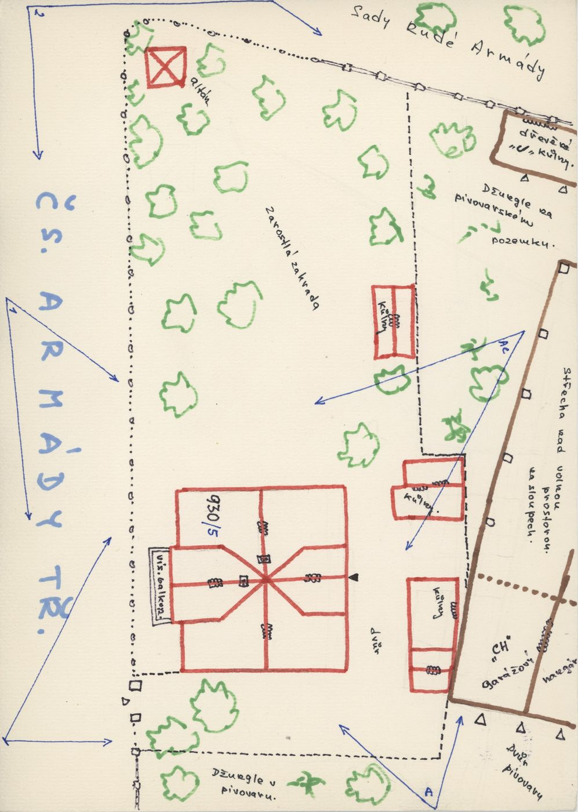
situační náčrt
SHA-256 56f23d239cf0…

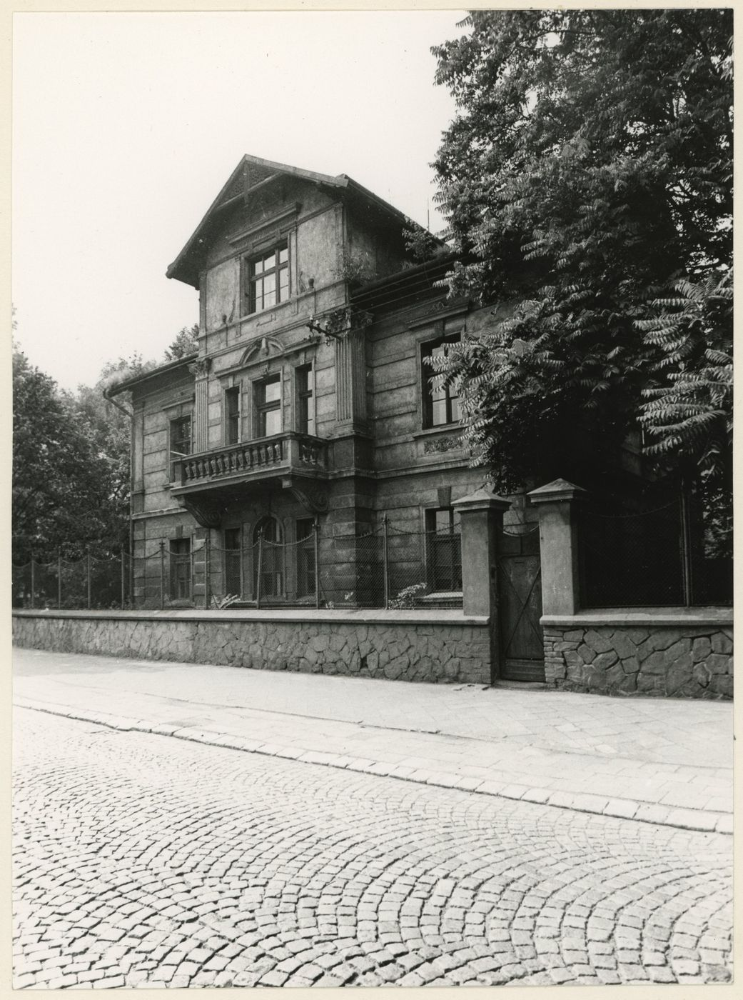
fotografie
SHA-256 1c05ebcd46bd…

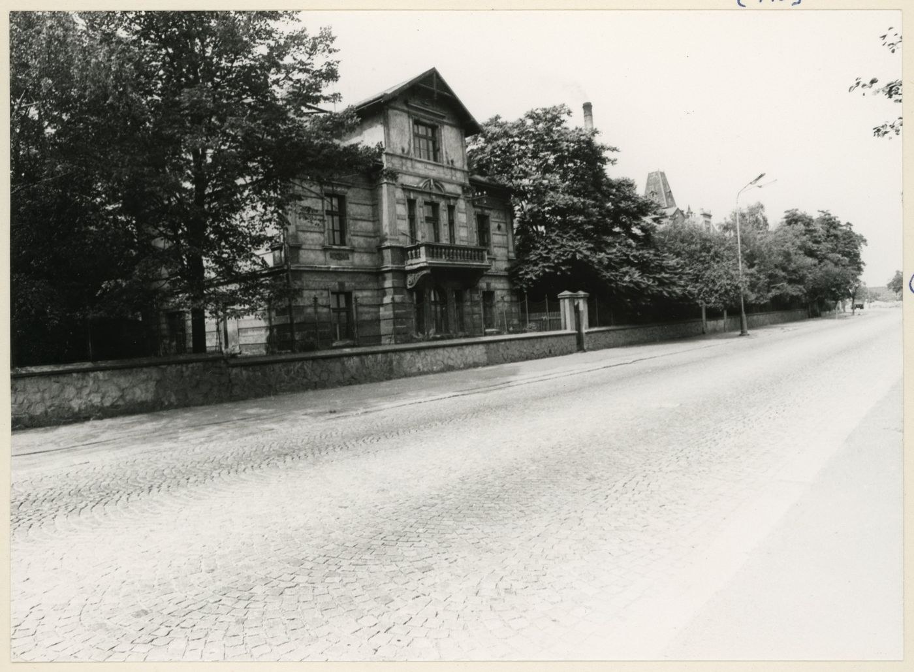
fotografie
SHA-256 2b04123d46b0…

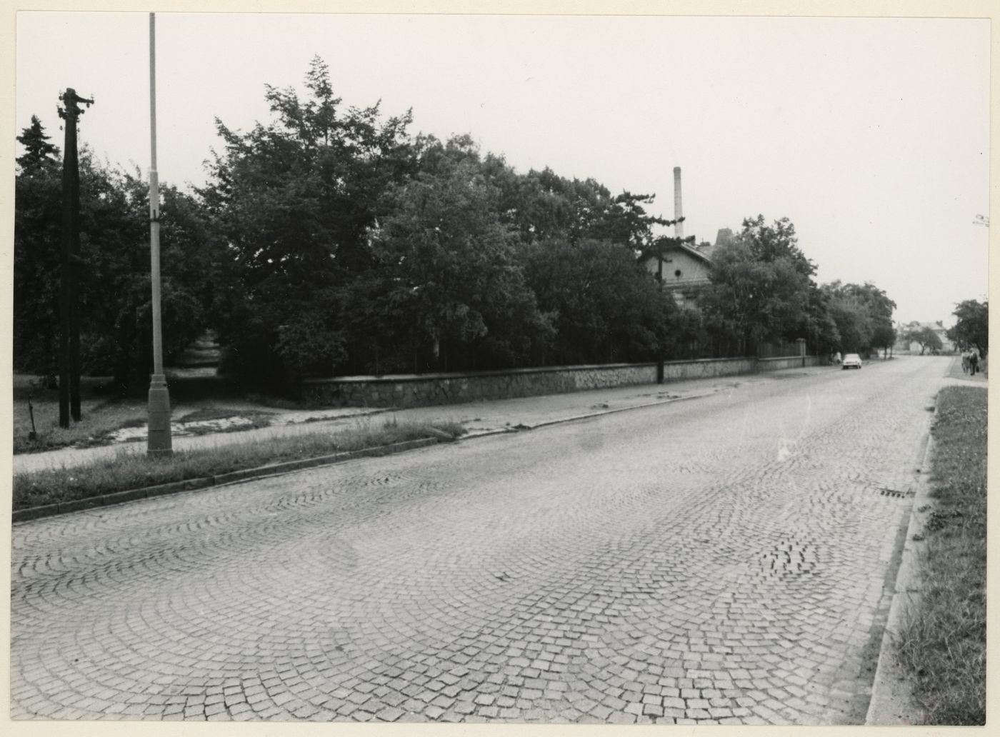
fotografie
SHA-256 5cfd42a4d435…

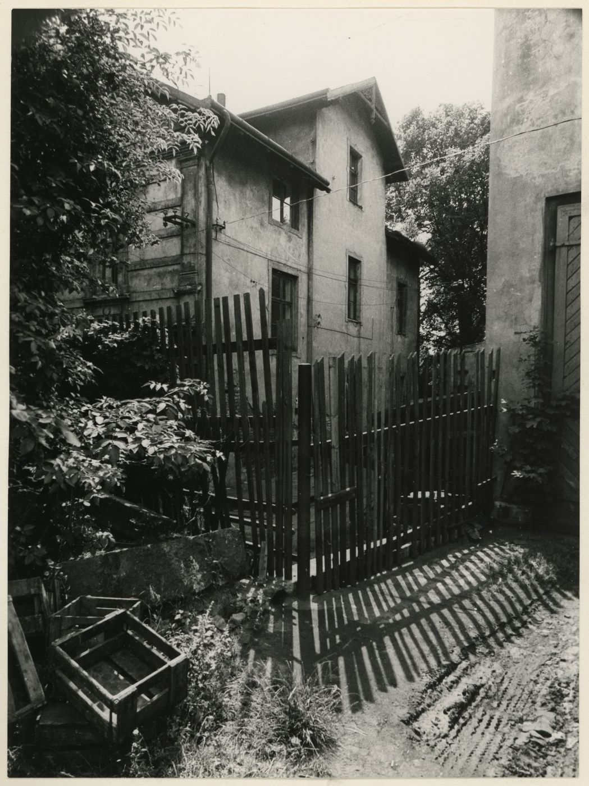
fotografie
SHA-256 e505a42c3388…

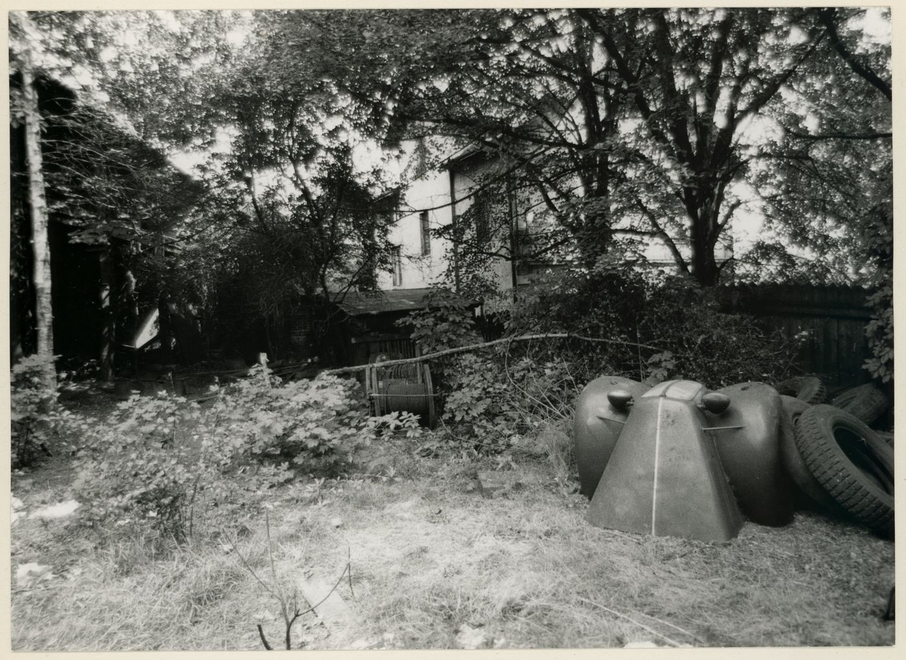
fotografie
SHA-256 8077a4b30376…

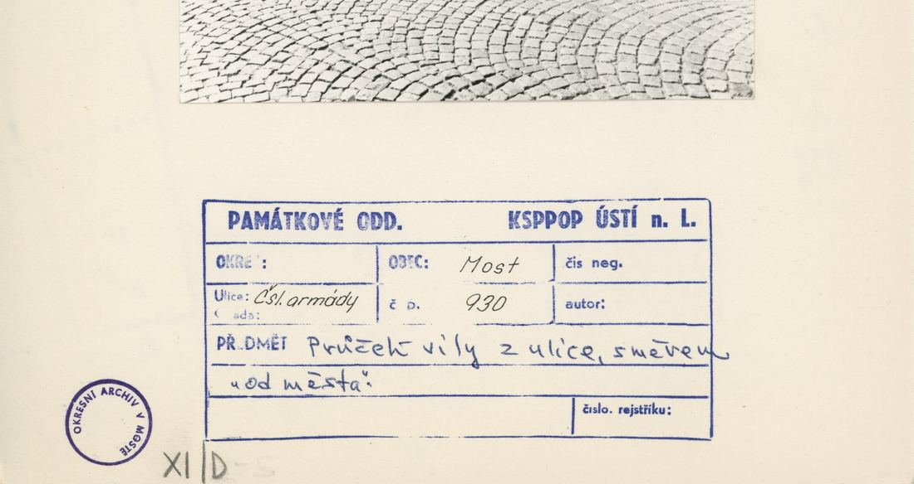
archivní karta (rub) · výřez textu
SHA-256 419a18f9b78f…

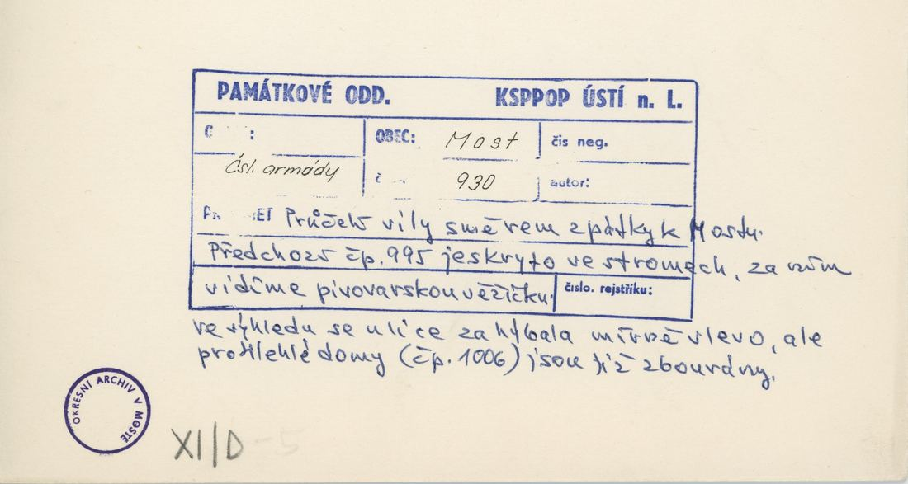
archivní karta (rub) · výřez textu
SHA-256 1b469192c30f…

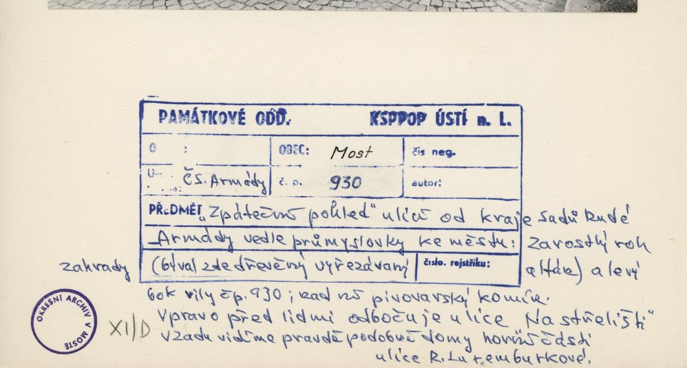
archivní karta (rub) · výřez textu
SHA-256 48d3de3beb8b…

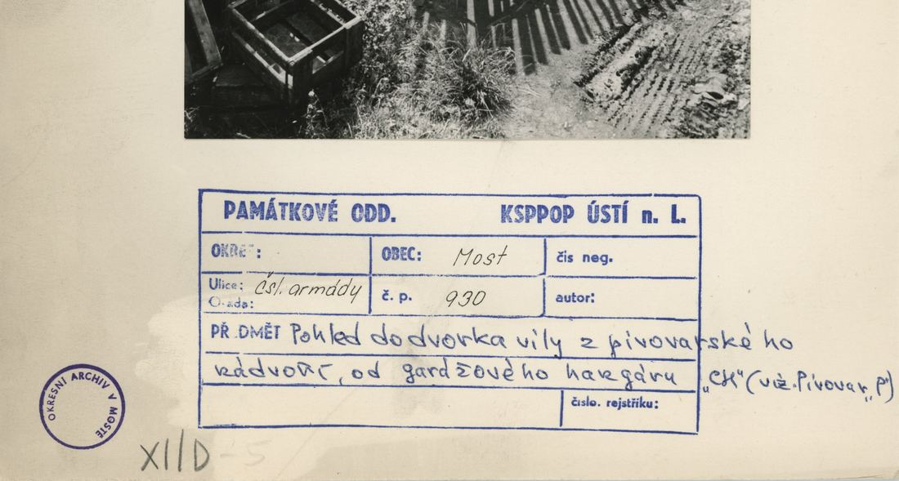
archivní karta (rub) · výřez textu
SHA-256 936024295380…

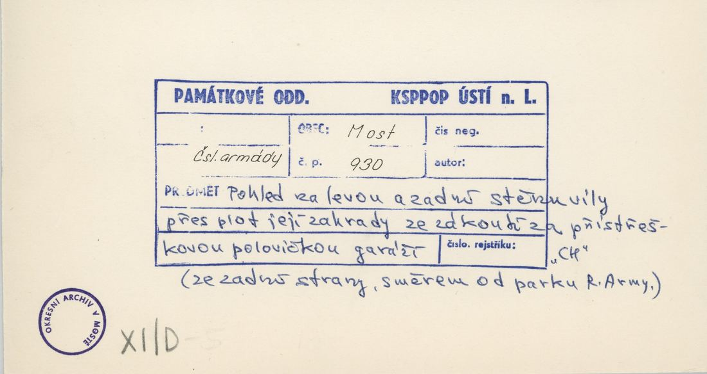
archivní karta (rub) · výřez textu
SHA-256 f87ecfa573c6…
Model
| Revize modelu | r4 (zachované revize: r1, r2, r3, r4) |
|---|---|
| Poloha | GIS půdorys id 2939 |
| Šířka průčelí | 6,50 m |
| Výška okapu | 7,60 m (odhad) |
| Podlaží | 2 |
| Střecha podle pramenů | stanová/valbová se štítovým vikýřem |
| Střecha v modelu | valbová / sedlová (hřeben, valby, štíty) |
| Otvory | 11 |
| Vikýře / vedlejší hmoty | 1 / 0 |
| Polygonů | 295 |
Zdroje rozměrů, jak jsou zapsány v plánu modelu
| Rozměry | GIS id 2939 polygon: central risalit 6.5 m at y=0, wings at y=1.9, 16.2 m total |
|---|---|
| Průčelí | photo cp_930_001: 2 storeys, arched entrance with steps in the risalit, 1st floor balcony with door, gable above; one window per wing and floor |
| Střecha | hip + front gable (photo) |
Kontrola r4: brána geometrie a 19 pohledů
Automatická brána (uzavřené podkroví, krytí střechou, UV, síť, počty otvorů proti fotografii s rámečkem) a 19 renderů: čtyři osy, čtyři šikmé pohledy na střechu, dva detaily průčelí, dva pohledy pod přední okap, pohled shora a šest pohledů bez barev materiálů. Stav: prošla.
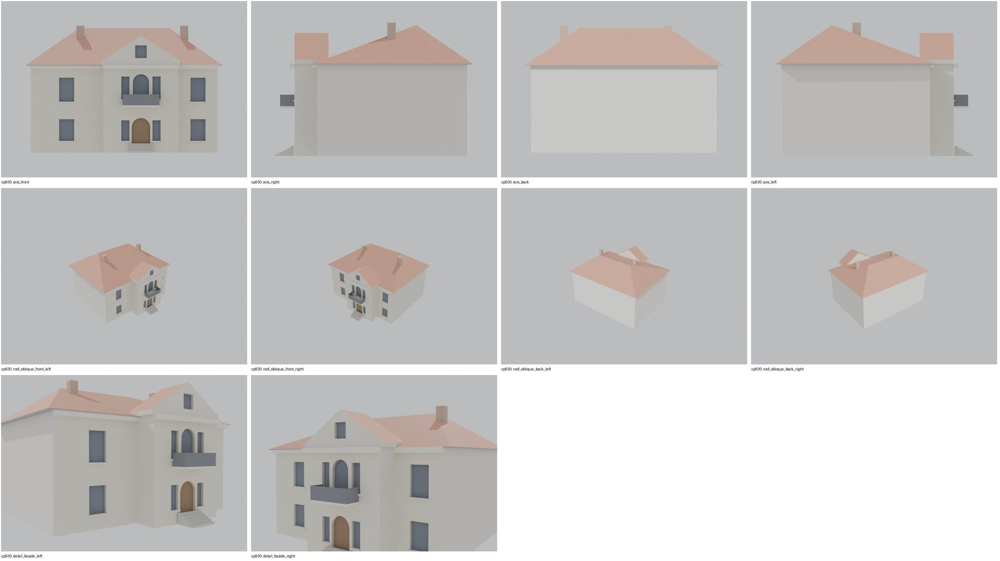
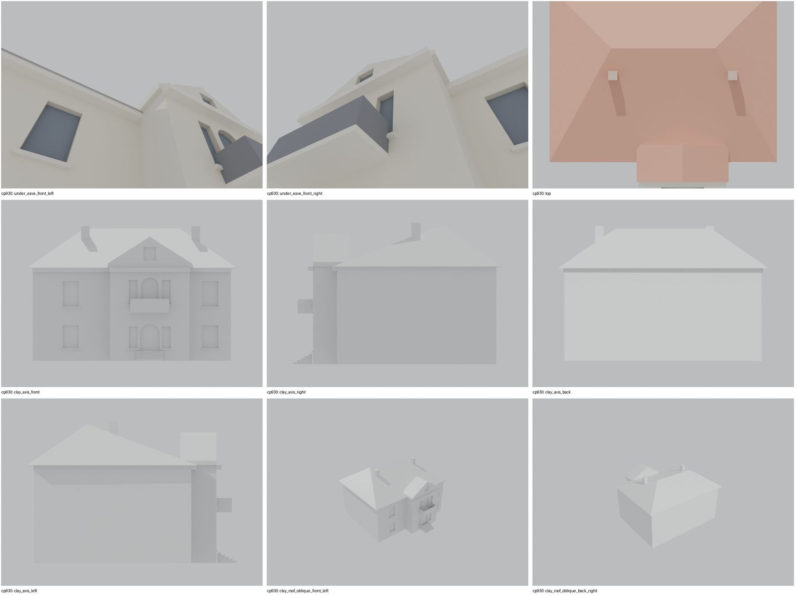
Nálezy a opravy
- rizalit s obloukovými dveřmi, schody, balkon s dveřmi a 2 okny, štít se sdruženým oknem
- křídla po 1 okně
- boční schody k zadním vstupům
- pod okapem uzavřeno
Revize r4: doklad fasád a změny
Okna a dveře se počítají na fotografii s červeným rámečkem po dělicích zdech domu. Řádky oken jsou zdola nahoru; „hypotéza“ jsou otvory, které na snímku vidět nejsou.
| Fasáda | Okna po podlažích | Hypotéza (id otvorů) | Poznámka |
|---|---|---|---|
| main | 2 / 3 + dveře 1 | – | rizalit: přízemí 2 okna + obloukové dveře, patro 2 úzká okna + balkonové dveře |
| dormers | 1 | – | sdružené okno ve štítu rizalitu |
| left | 1 / 1 | – | levé křídlo: 1 okno v každém podlaží |
| right | 1 / 1 | – | pravé křídlo: 1 okno v každém podlaží (částečně za stromem) |

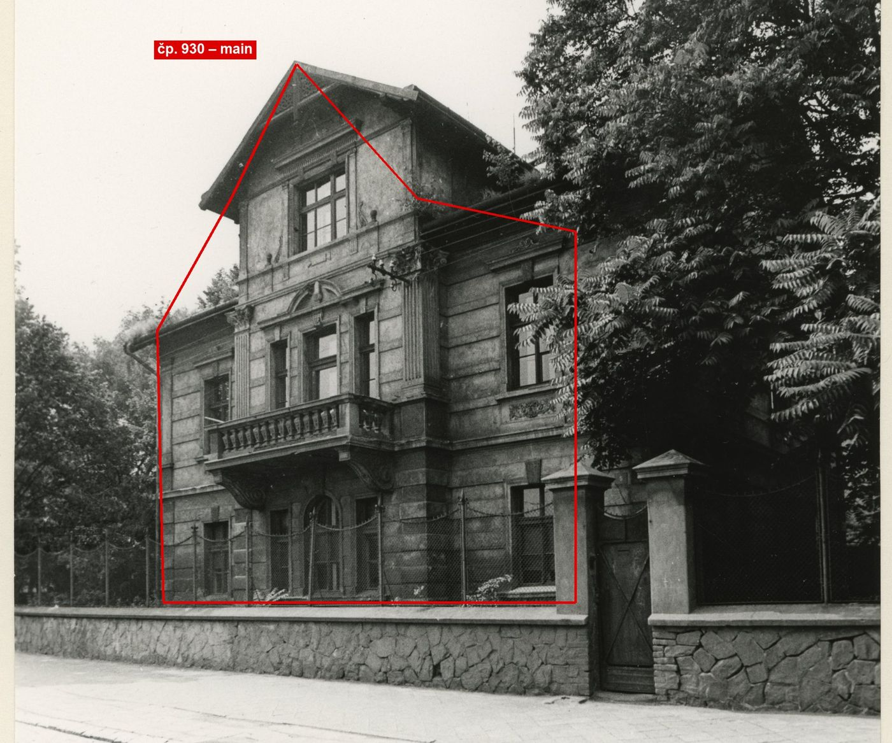
cp_930_001: vila s rizalitem: přízemí obloukové dveře + 2 úzká okna, patro balkonové dveře + 2 úzká okna (r2 mělo v patře jen dveře), ve štítu sdružené okno; boční křídla po 1 okně v obou podlažích.
Změny proti r2/r3
- closed attic, eave closures, gables along the roof underside, flat-roof covering slab, names for tools/most_qa (z4_post.py)
- gate pass 2: the risalit gable stands on the facade plane (y 0) from the wall top up (r3/r4 pass 1: set back 0.2 m, leaving 1.6 m2 of the risalit wall top uncovered)
- facade evidence (framed photo cp_930_001): two narrow windows flank the balcony door in the risalit (r2 had the door only); the ground windows sit on the same axes (1.9 / 4.6 m)
Hypotézy
Vše níže je model_hypothesis, provisional, locked: false.
- osy oken z šikmého foto
- výšky odhad
- vikýř/štít zjednodušen
- window axes from oblique photo
- ridge along the street
- all storey heights, opening sizes and roof pitches are estimates from photographs (model_hypothesis, provisional, locked=false)
- r3: main roof eave at the wing face; risalit covered by the gable volume
Soubory
- Model čp. 930, GLB
- Pracovní složka: F:\MOST\output\zatecka_street_claude_2026-10-17\houses\cp930\
plan_search.json,geometry_plan.json,README.md,texture_handoff_spec.json,r4/cp_930_G_r4.blend,r4/qa/qa_review.json, rámečkyframes/cp930_*